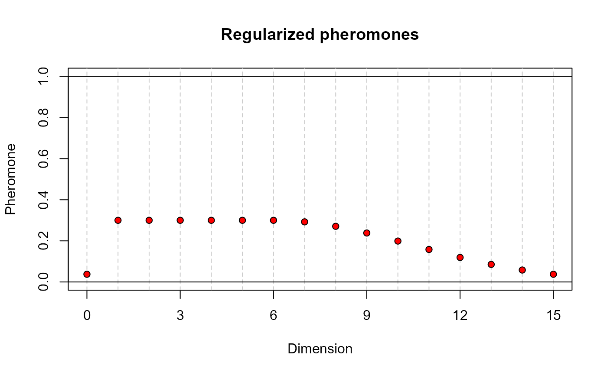
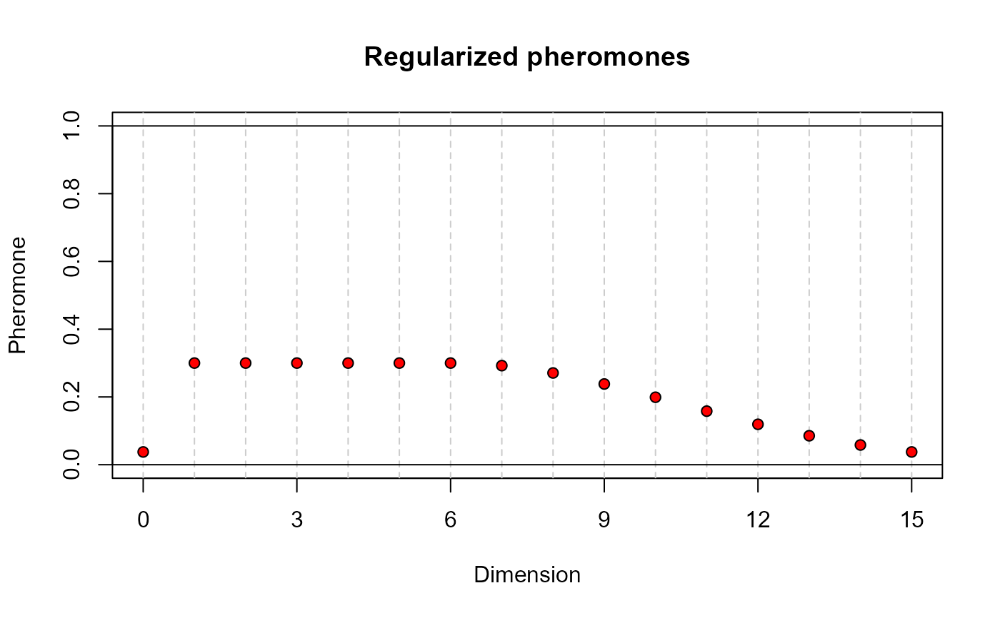

This function is intended to aid the selection of the heuristic parameters tao0, delta and dispr in the call to the model selection function fgpm_factory. The values computed by decay are the ones that would be used by the ant colony algorithm as initial pheromone load of the links pointing out to projection on each dimension. For more details, check the technical report explaining the ant colony algorithm implemented in funGp, and the manual of the package (doi:10.18637/jss.v109.i05 ).
decay(
k,
pmax = NULL,
tao0 = 0.1,
delta = 2,
dispr = 1.4,
doplot = TRUE,
deliver = FALSE
)Arguments
- k
A number indicating the dimension of the functional input under analysis.
- pmax
An optional number specifying the hypothetical maximum projection dimension of this input. The user will be able to set this value later in the call to fgpm_factory as a constraint. If not specified, it takes the value of k.
- tao0
Explained in the description of dispr.
- delta
Explained in the description of dispr.
- dispr
The arguments tao0, delta and dispr, are optional numbers specifying the loss function that determines the initial pheromone load on the links pointing out to projection dimensions. Such a function is defined as
$$tao = tao0 * exp(-.5 * ((p - delta - 1)^2/(-dispr^2/(2*log(.5)),$$
with p taking the values of the projection dimensions. The argument tao0 indicates the pheromone load in the links pointing out to the smallest dimensions; delta specifies how many dimensions should preserve the maximum pheromone load; dispr determines how fast the pheromone load drops in dimensions further than \(delta + 1\). If pmax = k, then the dimension 0, representing no projection, receives a pheromone load identical to that of dimension k. This, in order to represent the fact that both the representation of the function in its original dimension or a projection in a space of the same dimension, are equally heavy for the model. The default values of tao0, delta and dispr, are 0.1, 2 and 1.4, respectively, which match the default values used by the fgpm_factory function. Check this technical report for more details.
- doplot
An optional boolean indicating if the pheromone loads should be plotted. Default = TRUE.
- deliver
An optional boolean indicating if the pheromone loads should be returned. Default = FALSE.
Value
If deliver is TRUE, an object of class "numeric" containing the initial pheromone values
corresponding to the specified projection dimensions. Otherwise, the function plots the pheromones and
nothing is returned.
See also
* decay2probs for the function to generate the initial probability load;
* fgpm_factory for heuristic funGp model selection.
Examples
# using default decay arguments____________________________________________________________
# input of dimension 15 projected maximum in dimension 15
decay(15)
 # input of dimension 15 projected maximum in dimension 8
decay(15, 8)
# input of dimension 15 projected maximum in dimension 8
decay(15, 8)
 # playing with decay arguments_____________________________________________________________
# input of dimension 15 projected maximum in dimension 15
decay(15)
# playing with decay arguments_____________________________________________________________
# input of dimension 15 projected maximum in dimension 15
decay(15)
 # using a larger value of tao0
decay(15, tao0 = .3)
# using a larger value of tao0
decay(15, tao0 = .3)
 # using a larger value of tao0, keeping it fixed up to higher dimensions
decay(15, tao0 = .3, delta = 5)
# using a larger value of tao0, keeping it fixed up to higher dimensions
decay(15, tao0 = .3, delta = 5)
 # using a larger value of tao0, keeping it fixed up to higher dimensions, with slower decay
decay(15, tao0 = .3, delta = 5, dispr = 5.2)

# requesting pheromone values______________________________________________________________
# input of dimension 15 projected maximum in dimension 15
decay(15, deliver = TRUE)
#> [1] 7.647342e-24 1.000000e-01 1.000000e-01 1.000000e-01 7.021231e-02
#> [6] 2.430262e-02 4.146860e-03 3.488288e-04 1.446544e-05 2.957179e-07
#> [11] 2.980232e-09 1.480639e-11 3.626391e-14 4.378514e-17 2.606186e-20
#> [16] 7.647342e-24
# using a larger value of tao0, keeping it fixed up to higher dimensions, with slower decay
decay(15, tao0 = .3, delta = 5, dispr = 5.2)

# requesting pheromone values______________________________________________________________
# input of dimension 15 projected maximum in dimension 15
decay(15, deliver = TRUE)
#> [1] 7.647342e-24 1.000000e-01 1.000000e-01 1.000000e-01 7.021231e-02
#> [6] 2.430262e-02 4.146860e-03 3.488288e-04 1.446544e-05 2.957179e-07
#> [11] 2.980232e-09 1.480639e-11 3.626391e-14 4.378514e-17 2.606186e-20
#> [16] 7.647342e-24